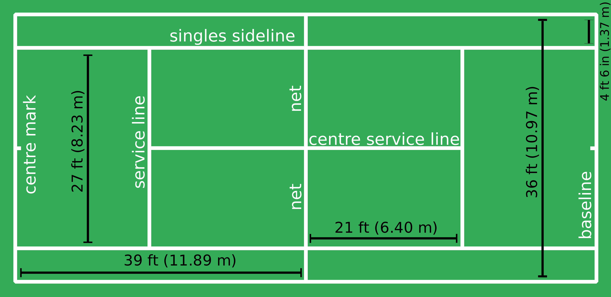

RULES:
- The game starts with a coin toss to determine which player must serve first and which side they want to serve from.
- The server must then serve each point from alternative sides on the base line.
- If the server fails to get their first serve in they may take advantage of a second serve.
- If the server clips the net but the ball goes in the service area still then let is called and they get to take that serve again without penalty. If the ball hits the net and fails to go in the service area then out is called and they lose that serve.
- The receiver may stand where they wish upon receipt of the serve. If the ball is struck without the serve bouncing then the server will receive the point.
- Once a serve has been made the amount of shots between the players can be unlimited. The point is won by hitting the ball so the opponent fails to return it in the scoring areas.
- Points are awarded in scores of 15, 30 and 40. You need 4 points to win a game.From deuce a player needs to win 2 consecutive points to win the game. After winning one point from deuce they player is on advantage. If the player wins the next point they win the game, if they lose it goes back to deuce.
- To win the set a player must win 6 games by 2 or more. The opening sets will go to a tie break if its ends up 6-6 where players play first to 7 points. The final set will not have a tie break and requires players to win by two games with no limits.
- If a player touches the net, distracts his opponent or impedes in anyway then they automatically lose the point.
TENNIS FIELD

Videos:
Wanna know the tips for playing tennis then "CLICK ME"
check out some interesting tennis MATCHES..!